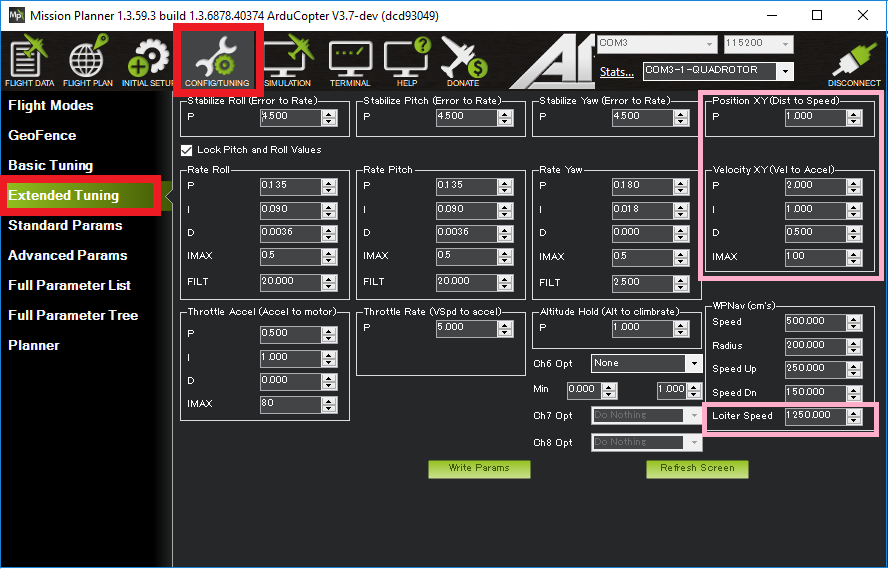
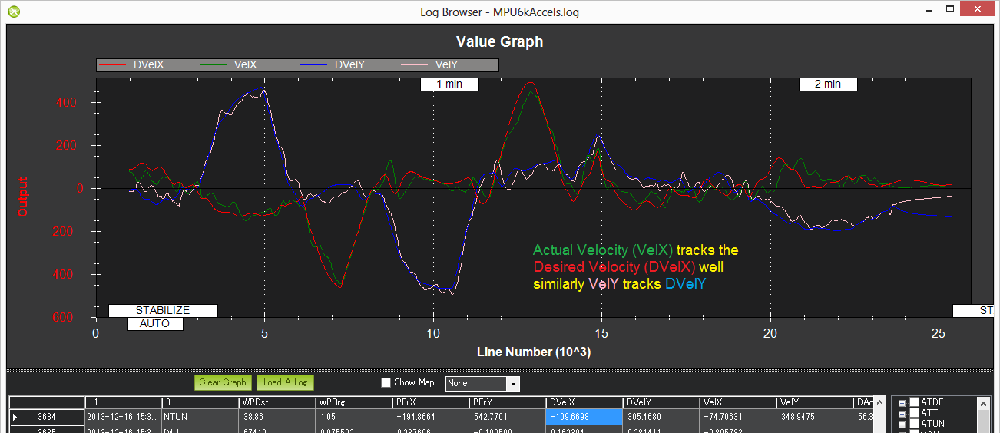

Loiter Mode¶
Loiter Mode automatically attempts to maintain the current location, heading and altitude. The pilot may fly the copter in Loiter mode as if it were in a more manual flight mode but when the sticks are released, the vehicle will slow to a stop and hold position.
A good GPS lock, low magnetic interference on the compass and low vibrations are all important in achieving good loiter performance.
Controls¶
The pilot can control the copter’s position with the control sticks.
Horizontal location can be adjusted with the Roll and Pitch control sticks with the default maximum horizontal speed being 5m/s (see Tuning section below on how to adjust this). When the pilot releases the sticks the copter will slow to a stop.
Altitude can be controlled with the Throttle control stick just as in AltHold mode
The heading can be set with the Yaw control stick
The vehicle can be armed in Loiter mode but only once the GPS has 3D lock and the HDOP has dropped below 2.0. More details on LED patterns here.
Tuning¶
{kind=link}
Loiter mode incorporates the altitude controller from AltHold mode. Details for tuning AltHold are on this wiki page.
Loiter Parameters¶
LOIT_SPEED: max horizontal speed in cm/s (i.e. 1250 = 12.5m/s)
LOIT_ACC_MAX: max acceleration in cm/s/s. Higher values cause the copter to accelerate and stop more quickly
LOIT_ANG_MAX: max lean angle in degrees (i.e. 30deg). By default this value is zero which causes the PSC_ANGLE_MAX or ANGLE_MAX parameter’s value to be used
LOIT_BRK_ACCEL: max acceleration in cm/s/s while braking (i.e. pilot has moved sticks to center). Higher values will stop the vehicle more quickly
LOIT_BRK_DELAY: the delay in seconds before braking starts once the pilot has centered the sticks
LOIT_BRK_JERK: max change in acceleration in cm/s/s/s while braking. Higher numbers will make the vehicle reach the maximum braking angle more quickly, lower numbers will cause smoother braking
PSC_POSXY_P: (shown as “Position XY (Dist to Speed)” at the top right of the screen shot above) converts the horizontal position error (i.e difference between the desired position and the actual position) to a desired speed towards the target position. It is generally not required to adjust this
PSC_VELXY_P (shown as “Velocity XY (Vel to Accel)”) converts the desired speed towards the target to a desired acceleration. The resulting desired acceleration becomes a lean angle which is then passed to the same angular controller used by Stabilize mode. It is generally not required to adjust this
Common Problems¶
The vehicle circles (aka “toiletbowls”). This is normally caused by a compass problem the most likely being magnetic interference from the power cables under the autopilot. Running compassmot or purchasing a GPS+compass module normal resolves this. Other possibilities include bad compass offsets set during the compass calibration process.
The vehicle takes off in the wrong direction as soon as loiter is engaged. The cause is the same as #2 except that the compass error is greater than 90deg. Please try the suggestions above to resolve this.
Verifying Loiter performance with dataflash logs¶
Viewing the loiter’s horizontal performance is best done by downloading a dataflash log from your flight, then open it with the mission planner and graph the NTUN message’s DesVelX vs VelX and DesVelY vs VelY. In a good performing copter the actual velocities will track the desired velocities as shown below. X = latitude (so positive = moving North, negative = South), Y = longitude (positive = East, negative = West).
{kind=link}
Checking altitude hold performance is the same as for AltHold mode.